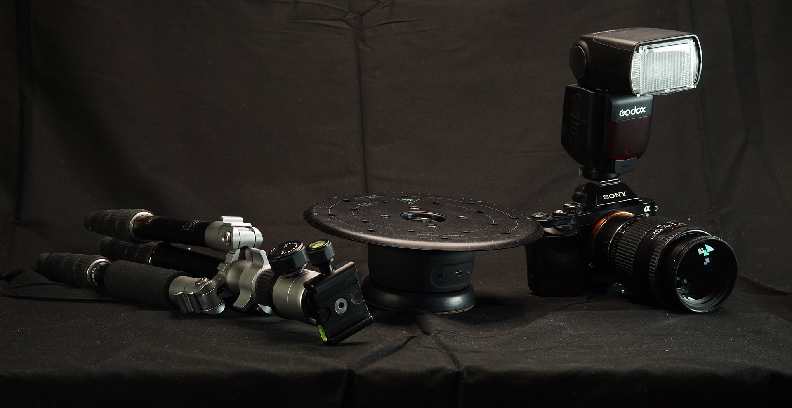

Support for 3D Capture has been removed as of Sampler version 5.1.
This user guide will go over the basics of camera settings and setup.
You prefer to watch this guide as a video tutorial? You can find it here.
Manual mode gives you full control over how the camera takes pictures, and most importantly, it allows us to ensure the sharpest photos this way, which is why it is preferred to the automatic mode.

On a DSLR camera there is a dial with several modes ranging from fully automatic to fully manual. Manual mode is usually marked with an "M" and gives you complete control over all three major settings that influence a photo's exposure and sharpness: aperture, shutter speed, and ISO. The combination of these three determines how much light the camera captures.
Aperture is the opening inside your lens. The larger this opening, the more light enters the camera. It’s expressed as an F-number, where a larger the number means a smaller opening.
Shutter speed is the time your camera will open its shutter to gather light. A longer shutter time means more light. It’s expressed in seconds, but usually as fractions, like 1/60th of a second.
ISO is your camera sensor sensitivity. Increasing the ISO means the sensor is more sensitive, gathering more light.
If any combination ends up too high, your image will be overlit and blown out, if too low, it will be dark and underlit.
Each of these 3 have side effects that can be a disadvantage. Large apertures (low F numbers) result in much smaller depth of field, where elements that sit further or closer away might be blurry.
Long shutter times mean your subject, or camera might move during a photograph, leading to a very blurry image.
And finally, ISO overloads your camera sensor a bit, leading to much noisier or even blurry results.
It is not possible to set all of them to the sharpest setting, as it would mean too little light enters the camera. Shooting manual is a balance act between all three, but how you set them depends on what you want to achieve; expressive street photography will have very different requirements from our precise photogrammetry.
What we want is an image as sharp as possible. ISO is easiest to set: Avoid automatic ISO settings, keep it as low as possible, ideally under 400, 100 is ideal.
Shutter time isn’t a big problem if we’re using a tripod and static subject, we can easily go to longer times than handheld shooting would allow, up to a whole second if needed.
Aperture is a bit less obvious. We don’t want a large aperture (low f-number), as this could easily cause parts of our subject to go out of focus, and we want the sharpest possible image. The exact value depends per lens, so make sure to look that up, but usually it’s between f8 and f16.
It’s worth mentioning you don’t have to use full Manual mode: the Aperture mode, marked A, will let you set Aperture and ISO manually, but automatically pick the right shutter time for you. Giving up some control can make it a bit easier to set things up.
As seen earlier exposure is a mix of 4 factors: aperture, shutter speed and ISO, and the amount of light you’re trying to capture. If any one of these changes, you need to adjust the others. More light means lower exposure, less aperture might require longer shutter time, lower ISO might require more light etc. Getting it right takes some practice and experimentation.
There’s one more setting on your camera that you might not want to leave up to chance. The white-balance of an image is what determines if a photo looks “warm” or “cold”. It’s entirely dependent on the lighting: outdoor sunlight easily looks cold, indoor bulbs easily look warm. This value is expressed in kelvin, K, and you want to match it to your lighting. Outdoor lighting is about 7-8000K, indoor about 5000. It’s usually fine to set this on sight.
Now that you know everything about exposure, learn more about setting your camera's focus for the 3D Capture process.